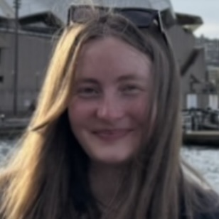
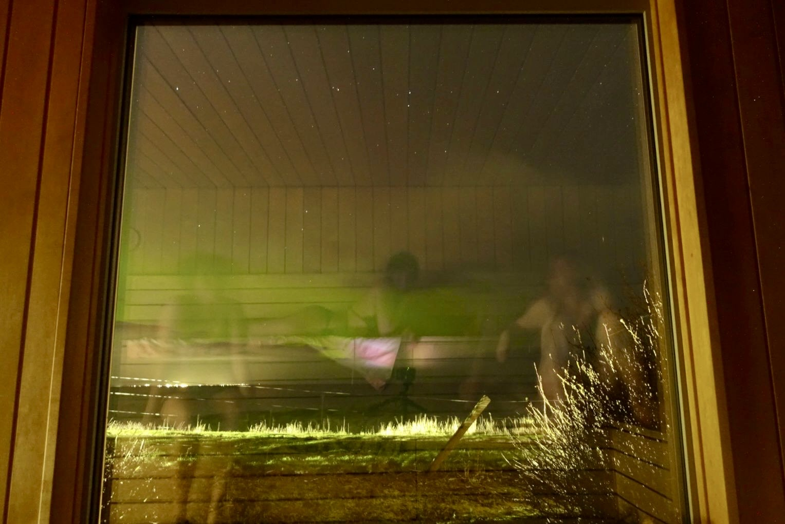

Dinah Hartmann
(she/her) PhD Student • Centre for Research into Ecological and Environmental Modelling • University of St Andrews School of Mathematics and Statistics
I am a PhD student at the Centre for Research into Ecological and Environmental Modelling and Scottish Oceans Institute since 2024. My research sits at the intersection of bioacoustics, marine mammal science, statistics and computing. I am interested in using technology, programming and ecological statistics to tackle problems in marine mammal density estimation using passive acoustic monitoring.
My PhD focuses on improving and developing methods to estimate harbour porpoise density from automated click detector data, but I have worked with a wide range of data, including but not limited to, animal-borne tag movement and acoustic data, broadband acoustic data, drone data and opportunistic and systematic visual survey data.

Besides ocean research, I also enjoy ocean swims, surfs and sea-side saunas year-round! Ideally under the clear starry night sky and auroras with friends! That is not to say I don't also enjoy a good hike on land or a night in with friends (: